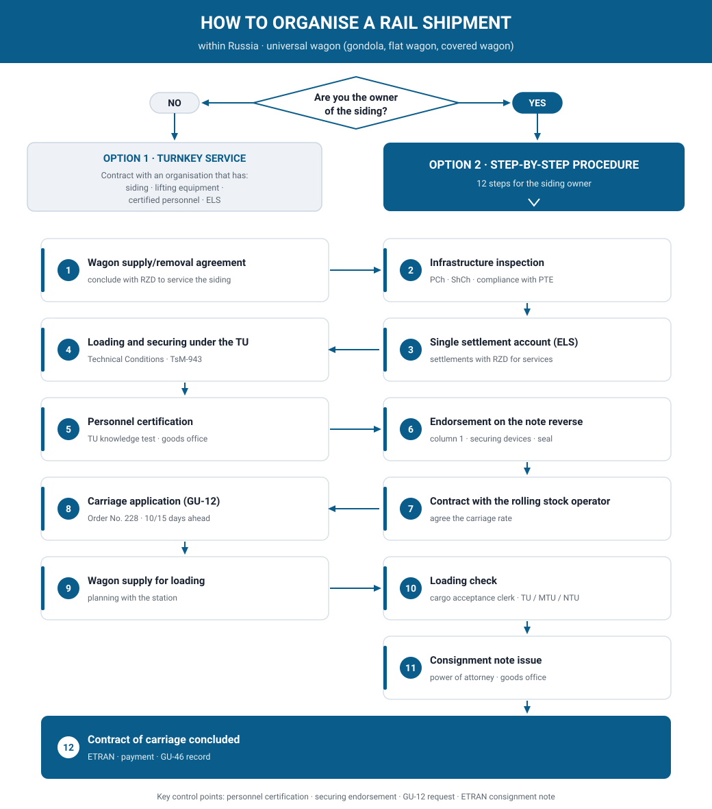

How to organise a rail shipment
Below is the practical procedure for arranging carriage of goods by rail within the Russian Federation in a universal wagon (gondola, flat wagon, covered wagon). The sequence of steps depends on whether you own a rail siding.

Option 1. You have no siding — a turnkey service
If you do not own a rail siding and only have the cargo, find an organisation that has:
- its own rail siding;
- the necessary lifting equipment to handle your cargo (cranes, fork-lift trucks, front-end loaders, etc.);
- trained and RZD-certified personnel authorised to sign the reverse side of the consignment note for the correctness of loading and securing of the cargo in the rolling stock;
- a single settlement account (ELS) for settlements with Russian Railways.
You simply conclude a contract with such an organisation, and it provides a turnkey service.
Option 2. You own a siding — step-by-step procedure
If you own your own rail siding but have no locomotives with permits to enter the public network and have decided to start shipping by rail, the procedure is as follows.
Step 1. Wagon supply and removal agreement
Conclude an agreement with Russian Railways for servicing your siding — the wagon supply and removal agreement.
Step 2. Infrastructure inspection
Your rail infrastructure must be inspected by the manager (deputy manager), as well as by representatives of the track section (PCh) and the signalling and communication section (ShCh) of the RZD station to which your siding connects, for compliance with the Technical Operation Rules (PTE) of the railways of the Russian Federation.
Step 3. Single settlement account (ELS)
Open a single settlement account for settlements with Russian Railways for the carriage and all related services: supply and removal of wagons, payment for the use of wagons, station charges according to the tariff schedule, etc.
Step 4. Loading and securing under the Technical Conditions
Perform loading on your siding and securing of the cargo in the wagons in accordance with the Technical Conditions for the Stowage and Securing of Cargo in Wagons and Containers (approved by the Ministry of Railways of the Russian Federation on 27.05.2003 No. TsM-943, as amended on 23.10.2017): under Chapter 1 and the chapter relating to your cargo (for example, loading of timber is Chapter 2 of the Technical Conditions).
Step 5. Certification of responsible personnel
Employees responsible for, and directly performing, the loading, stowage, securing and unloading of cargo must pass a knowledge test on the Technical Conditions for the stowage and securing of cargo. Such tests are usually conducted by the deputy station master and the commercial inspector of the RZD section that includes the station to which your siding connects.
You submit to the goods office of the departure station copies of your orders (instructions) appointing the employees responsible for loading/unloading — with copies of their passport data and specimen signatures.
Step 6. Endorsement on the reverse side of the consignment note
Your representative confirms compliance with the stowage and securing conditions by an endorsement on the reverse side of the consignment note in column 1:
- when stowing and securing under the Technical Conditions (TU) — the endorsement must contain the numbers of the relevant chapter, section and figure of the TU;
- when stowing and securing under MTU / NTU (local / non-standard technical conditions) — the number and date of approval of the MTU/NTU respectively (to be described separately);
- in all cases — a list of the securing devices used (name and quantity) and the consignor's signature (stating position and full name), certified by the consignor's seal.
Special endorsements on the reverse side of the consignment note:
- when dispatching cranes, excavators and other machines on wheeled or tracked chassis, with attachments and rotating parts — an endorsement on the securing of the attachments and rotating parts, for example: "To prevent rotation of the boom, four wire ties of 6 mm diameter in four strands have been applied";
- when dispatching cargo using reusable securing devices — an endorsement in column 4 stating the name, quantity and factory numbers of the reusable securing devices;
- when dispatching goods under SMGS, the stowage and securing particulars are entered in columns 33–44 of the consignment note and certified by the consignor's signature and seal.
Step 7. Application for carriage (GU-12)
To submit an application for carriage, conclude a contract with the owner or operator of the rolling stock and agree with them the rate for the carriage of your cargo.
Largest rolling stock operators in Russia
| Operator (holding) | Fleet specialisation |
|---|---|
| First Cargo Company (PGK) | universal operator, largest private fleet (gondolas, covered wagons, flat wagons) |
| Federal Freight Company (FGK) | gondolas (RZD subsidiary) |
| New Forwarding Company (NPK) | gondolas |
| Novotrans Holding | gondolas, universal |
| UVZ-Logistic (Uralvagonzavod) | gondolas |
| Globaltrans (NTS, BaltTransService, Rail Garant) | diversified holding |
| SG-trans | tank wagons |
| Gazpromtrans | tank wagons |
| NefteTransService | tank wagons |
| TransContainer | flat wagons, containers |
| Modum-Trans | flat wagons, containers |
| Demetra Holding (RusTransCom, TransLes) | grain hoppers, timber wagons |
| Atlant | universal |
| Vector Rail | gondolas, flat wagons |
| TFM-Trans | universal |
| Eurosib | universal |
Note: this list is indicative and not exhaustive; operators' wagon fleets change continuously. Confirm the exact rate with the operator when agreeing the contract.
The carriage must first be planned. Planning of carriage is carried out on form GU-12 (Rules for accepting applications for the carriage of goods, approved by Order of the Ministry of Transport of Russia of 27.07.2015 No. 228).
Deadline for submitting the application before the start of carriage:
- in direct rail traffic — not less than 10 days before the start of carriage;
- in direct and indirect international traffic / in direct and indirect mixed traffic / where ports are specified as the destinations — not less than 15 days before the start of carriage.
Only after the GU-12 application is agreed is the carriage considered planned, and Russian Railways may then supply wagons for loading under that application.
Step 8. Supply of wagons for loading
As soon as your operator delivers the wagons to the station to which your siding connects, you plan with the station operations staff the supply of wagons to your siding and, once the wagons are placed, begin loading them.
Step 9. Loading check
After loading and securing of the cargo, the correctness of loading for compliance with the Technical Conditions is checked by the station's cargo acceptance clerk (priyomosdatchik). In the case of oversized cargo, or cargo carried under MTU/NTU, the check is performed by the deputy station master for freight operations, or, where there is no such position, by the station master or the section's commercial inspector.
Step 10. Issue of the consignment note
After the loading is accepted by the cargo acceptance clerk, you issue the rail consignment note. The signature for the correctness of the particulars entered in the consignment note is made by your employee, for whom you issue a power of attorney and submit it to the station's goods office.
Step 11. Conclusion of the contract of carriage
Once the loaded wagons have been pulled out for dispatch from your siding to the connecting station and the goods cashier has processed the carriage documents in the ETRAN system, the contract of carriage is considered concluded. What remains is to pay for RZD's services, including the supply and removal of wagons to and from your siding — these are recorded in the wagon supply and removal record on form GU-46, under which the goods cashier will assess the cost of the service in accordance with your wagon supply and removal agreement (see Step 1).